福岡に上陸しました！
雨ー(´・ω・｀)
福岡のみなさん雷とか大丈夫ですか？
この雨雲には広島にも行くんだろうか...
地元広島の隣の隣の県 福岡。
ちっちゃい頃 ままと
ふたり旅したなー懐かしいなー♪
お仕事ではぐるカー発売の時に
ティッシュ配りしたりした以来だから...
やっぱりちょっと前かー
久々福岡。
通りもんをおみやにと頼まれておる福岡。
よーしライブ頑張るぞー(｀・ω・´)
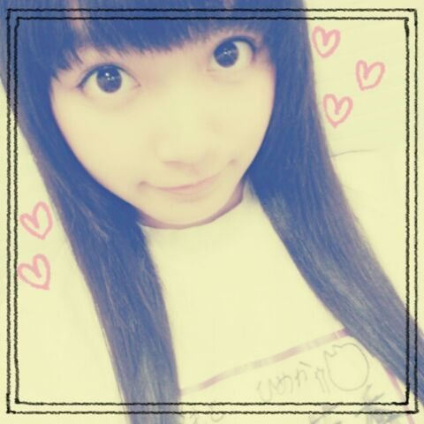
昨日はNOGIBING収録でしたー
オンエアはちょっと先かなー
背景と同化しちゃってるけど体操服ねー＊
もう前みたいなことにならんよう
今度こそはちゃんと自信もって告知するね
覚えてたらね！覚えてたらね！覚えてたらね！
じゃあーここで忘れる前に
○今週日曜 乃木のの 第21回
○今週日曜 乃木どこ
...正直言って自信がないので
今回も告知する気なかったんだけどな(笑)
そんなアイドルがいていいんだろうか！
いけませんねー情けないねー
スタジオにはいるのでとりあえずよかったら♪
そして乃木坂46 結成２周年迎えました＊
おめでとうコメントたくさん
ありがとー(*^ω^*)/
乃木坂は結成２周年で２さいなのか、
それともデビュー２周年で２さいなのか...
去年もそういや悩んだな。
でもどっちも大切な記念日です♪
いつも応援してくださっている
乃木坂ファミリーのみなさん
本当にありがとうございますっ
ファンのみなさんとスタッフさんと
メンバーのみんなと
この２年間でたくさんの出会いがあって
そのひとつひとつが大切な思い出。
いつも思うのが、
乃木坂に入ってなかったら
こんな素敵な出会いもなかったんだなって( ω )
ひめたんは「一期一会」って言葉が
好きなんだけど
本当にその言葉の大切さをいつも感じます
これからも乃木坂46は
まだまだ上を目指して上り坂をかけあがっていく
パワーがあるグループ！
辛いことも時にはあるけど
それが乃木坂46だと思うようになりました
もっともっとたくさん経験を積んで
ビッグなアイドルになるぞー(｀・ω・´)
みなさんもよかったら一緒に上り坂を。
そして ここからはひめきゅんさんへ
いつもひめたんのこと応援してくださって
本当にありがとうございます(*^ω^*)
ひめきゅんさんはひめたんのこと
いつも気にかけてくださって
ちょっとでもひめたんが落ち込んでると
あたたかい言葉をかけてくださったりして
もう本当にお兄ちゃんお姉ちゃんのような
お父さんお母さんのような
彼氏さん彼女さんのような...///
そんな存在です！
最近ひめきゅんさんに仲間入りしたよーて方は
もっとひめたんのこと知ってほしいし
ひめたんも もっと仲良くなりたいな( ^ω^ )
そしてベテランひめきゅんさんだよーて方は
ずっとひめたんのことみててくれてありがとう！
これからもよろしくね( ^ω^ )
ひめたんはなかなかひめきゅんさんたちの
期待に応えられなくて
いつも申し訳なくて正直頭上がらなくて...
長いことお待たせしちゃってごめんなさい。
それでもたまにテレビ出たときとかに
観たよーとか よかったよーとか
もっとひめたんをテレビで見たいな、って
いつも期待してくれてて
その言葉にいつも励まされます
今は学業も活動もどっちも
頑張らなきゃいけない立場だったりします
ひめきゅんさんには
学校があって活動を休まなきゃいけない時も
たまにはあるかもしれないけど
活動を頑張りたいって気持ちは
みんなとおんなじだってこと
わかっていてほしい。
あと１年半！
現役高校生でいられる期間って
貴重なのかもしれないから
大事に過ごそうと思います(〃ω〃)
とか言いつつ最近は
はよ卒業したーいってめっちゃ言ってる(笑)
はやくみなさんの期待に応えられるよう
もっともっと頑張るね！
ひめきゅんさん孝行できる３年目にする！
あ親孝行もきっとします(｀・ω・´)ぱぱまま
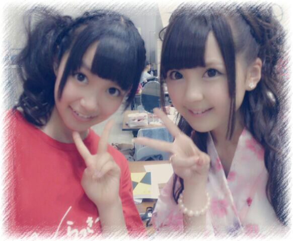
写めリクエストありがとー♪
ひめたん × とまとだよー∩^ω^∩
長くなっちゃったから
今回は質問返しは少なめですごめんねー
続きはまた今度まとめてするね♪

 ひめたんビームと、
ひめたんビームと、
あしゅのとりゃぁぁぁの威力は
どっちが強いんですか？その質問は
世界の規律を崩す質問なので
答えれませーん(c)
by あしゅりん(c)
 ひめたんはこのままのわたしと
ひめたんはこのままのわたしと
ショートカットなわたし
どっちがいいと思う？ひめたんはロングのおにゃーのこ
好きだけどなー
ロングだといろんな髪型できるしね☆
でもショートも見てみたい気するなー...
おかおちっちゃいからショートも似合うよ///
ひめたんはニキビとかできたことないん？でっきっるっよー！
でも一時期よりは落ち着いたかなー♪
発音は「ひめた↑ん」と同じように
「ひめにゃ↑ん」でいいのかな？そうだねーないすな提案ありがとー///
ひめにゃーんって
呼んであげてくださーい◎
バカリボンはフリじゃないですっ！
最近このやりとり好きだなー///
そんな川後Pは
目が合うたびウインクしてきます
これが結構上手いんだ(戦慄)
(＊´・ω・＊)
どうも、
ばかリボンですこんばんは。笑
今回の乃木ここは
川後Pがカメラまわしてますよー
斜めから撮ってくれる感じが尊敬(〃ω〃)
でもこれだけは言いたい
ぜーんぜん汚くないよ！
「ばか」リボンじゃないよ！
メンバーさんの間でも
定着しつつあるこのあだ名...
川後Pの愛を感じるね。
ちょーっとかわいさに欠けるけど
嫌いじゃないです
で、でもみなさんは
ばかリボンって呼んじゃだめよー♪
Zepp Sapporo 真夏の全国ツアー2013
来てくださったみなさん
ありがとうございました！
北海道でのライブは初めてとゆーことで
しかもツアー初日とゆーことで
ちょっと不安だったけど
みなさんの声援を受けてパワーもらえました♪
この勢いで全国全公演がんばるぞー( ^ω^ )/
ひめたーん！って声とか
うちわとかサイリウムとか全部届いたよ///
本当にありがとうねっ
やっぱりZeppはファンのみなさんと
距離が近いから好きー♪
そうそう
昨日のセトリは運営さんブログまたは
かなりんブログまで。
昼の部クイズコーナーでは罰ゲームで
チャリ漕ぎました(´・ω・｀)
チャリ乗った瞬間あしつった(´・ω・｀)
ヘアは結局
昼公演...編み込みさらさらストレート
夜公演...編み込みくるくるツイン
でした！冒険女子！
考えてくださったみなさん
ありがとうございました( ^ω^ )
ポニテ派が多かったからいつかやりまーすー
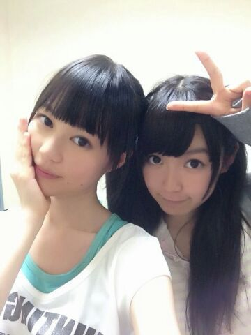
安定のいくちゃん
ホテル一緒の部屋ありがとー///
なんかねみんなからはね
ふたりのタイプが正反対だから
仲良しなのが意外って言われるけど
いくちゃんといると落ち着くの(*^ω^*)
朝起こすのは任せて下さい！
ねこさんの名前
みんな考えてくれてありがとー！
なんかいい名前がいっぱいあったから
決め難いなあ...
ちなみに一番多かったのは
「ひめにゃん」
じゃあひめにゃんって呼ぼうかなー
でもニックネームとしてみんなも
好きに呼んであげてね( ω )
それから結成２周年ムービーみて
新技考えてくださった方もありがとー！
公式サイトでムービーあがってるので
まだみてないーって方はよかったら
チェックよろしくですー
なんか思い付いたらどんどん教えてねー♪
あとコメントで多かったので
さらっとお答えすると
そうなんです前にも言ったかもだけど
杏奈ちゃんとはちょっと面識が
あったりするのですー♪

 ひめたんから見たまいまいは、
ひめたんから見たまいまいは、
どういうイメージがありますか??のほほんって感じ(*^ω^*)
目あったら「びーむ！」って
してくれるんだよー＊
あれ？ひめたんはどSですか？笑違うちがうし
なんでそーなるし(笑)
ひめたんの応援サイトを
ある場所で俺が作ってもいいですか？わーい＼( ^ω^ )／☆
日焼け止めって何使ってますか？？ジェルタイプのやつが
使いやすくて好きよー ♪
肌さらさらーになる感じも気持ちいしねっ
ひめたんって数学できたー？できなかったしできないし。大変よー
算数の時からできなかったのよ
誰か教えてー(´;ω;｀)
あなたは中国語ができますか？簡単なあいさつとかしか
わからないのです←
素敵な言葉教えて欲しい◎
市民球場で見たことある野球？市民球場は残念ながらないです...
でもねっマツダスタジアムできてすぐに
試合連れていってもらったんだよ( ^ω^ )
名古屋会場行くんだけど、
名古屋でも上手が多いの？そうだねー多分そうかな。
名古屋もがんばるからねーっ☆
アイドルになりたいって
思うようになったんだ。
ひめたんどうしたらいいかな？そうだなー
自己PRとか考えてみたらどうかな？
自分ってどんな人なのかなーって言葉にするの
実は難しいんだよね( ^ω^ )
Tシャツが、ひめたんがデザイン
したのきてったら気づいてくれる？？気っづっくっよっそりゃー
だってひめたんが頑張って考えたもん！
普段の生活で着てくれたっていーんだよ♪
ダンスが上手くなるコツってあるの？アドバイスできる立場じゃないけどなー
自信もって、楽しく踊るのが一番だと思うよっ
見てる人を感動させられるようなダンスが
できたらいいねっ(〃ω〃)
今年花火したり、花火大会行ったりした？スタジオからみたよー！
花火大会には行けなかったなー
今年は天気が不安定な日多くて
花火大会も大変だったんじゃないかなー？
中学校の後輩さんが
全国大会で優勝したと聞いた。
本当におめでとー！
ひめたんはこれでも
部長さんをやっていたので
もう懐かしくて嬉しくて後輩さんが愛しくて。
そーか夏ももう終わりなんだな。
宿題...
(＊´・ω・＊)
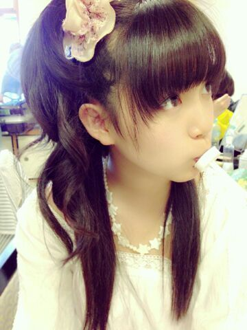
生田社長が撮ってくださったよー！
「赤ちゃんみたいで可愛いでしょー
ばぶーばぶー」
だそうですてへぺろ///
いよいよ全国ツアー初日 札幌公演！
ずっと楽しみにしてたんだー
今日はしっかりがっつり寝て
明日がんばるよー(｀・ω・´)
毎公演違うので
多少いろいろあるかもだけど、
全体的に立ち位置は
上手にいることが多いかな
上手...伝わるかな
みなさんからみたら右手側ってゆーか...
多分ぐぐったらわかる！
それとね、明日のヘア
どうしよーかいま悩んでるのー。
いつものハーフアップしようかなー
髪おろして踊ってると暑くなってくるから
うーんどーしよー(´・ω・｀)
ツインかなーポニテかなー
それともなんかあるかなー
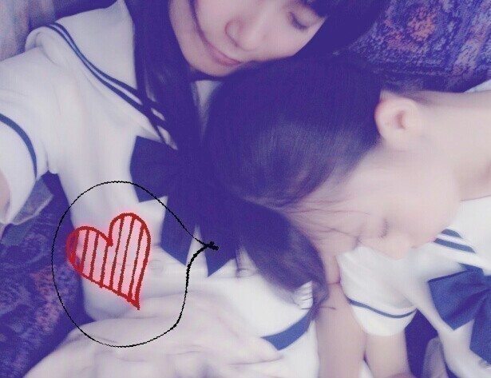
あしゅりーんがひめたーんの肩で寝てるよー！
あしゅファンのみなさん
中元そこかわれだよねーごめんね(///)
加工してあなたとあしゅの添い寝写めでも
作っちゃって楽しんじゃって
遊んじゃってくださいねー
カレーうどんはフリではないです←
そして、
カレーラーメンは？カレーそばは？とか
ゆー意見もありましたが
カレー跳ねても知らないよー♪
ちなみにカレーついたら茶 色 く な る よ
もう言ったからねーっ！
茶色いのついても着てよー
約束よー絶対よー？

 個握のときに
個握のときに
デュエットしたいってのはありかな？笑ありあり！一緒に歌おっ(*^ω^*)
宮崎あおいに似てるって言われませんか？たまに言っていただくことあります！
ひめたん宮崎あおいさん大好きだから
本当に光栄です///
ひめたんビームは
クレヨンしんちゃんのアクションビームから
きてるんですか？それが違うんですよー。
でも似てるね！仲間か！しんちゃーん！
ひめたんビームの名付け親はあしゅだよー
ひめたん推しちゃいそう♪
どうしたらいいかな？そーだなー
ひめたん推しになってくれたらー
ちゅーしちゃうぞー(〃ω〃)ふふ
ちなみに、ひめたん推しの方を
ひめきゅんさんと呼ぶよ☆
なんでアイドルなろうとおもったん？歌もダンスも好きだから、それで
誰かを笑顔にできるのって
素敵だよなーって。
世界陸上、ひめたんも見たのかな？どの競技を見るのが１番すき？運動する人かっこいい(〃ω〃)！
ルールとかには詳しくないので
浅くひろーく何でも応援します♪
90年代の曲でよく聴く曲とかあるかな？JUDY AND MARYさんとか歌うのも聴くのも好き。
プリプリさんとかも好きですよ！
女性ボーカルのバンドって類いになるのかなー
パスポート持ってるの？一応持ってるよー( ω )
海外行ったことないけどー( ω )
握手会でループされるのと、
まとめ出しされるのどっちがいい？どちらでも全然いいけど
個人的にまとめ出しでまったり話すのとか
まったり歌うのとか好き。
ブースの中をぐるぐるループするのは
疲れちゃいそう...(´・ω・｀)実際どうなの？
高いキーだすコツとかない？喉をリラックスさせつつ
お腹でふんばる。
カラオケとか行ったらぜひお試しを♪
まさか さゆりんに直接聞いた......とか？だって目の前にいたんだもん(o・・o)
ひめたんビームを
夜10時以降のいくちゃんにすると
どうなりますか？巻き舌巻き唇して(゜∀゜)この顔されました
ちなみに今もとなりでおうた歌ってます
「いやぱ」って10回言ってみてって
いくちゃんがいってますよみなさん。
個握の時にひめたんビームやって下さいって
お願いしたらやってくれますか？やるお！びーむ(<・ω・>)
好きなサイリウムは何色ですか？ピンク！ピンクが好きです！
ピンクサイみえたらとりあ手振りますー☆
 こわい話、お化け屋敷とか無理？
こわい話、お化け屋敷とか無理？お化け屋敷はギリセーフ、
怖い話は別に耐えれなくもないけど
好んでしないかな...
ほん怖とか観ない派です怖いから(´・ω・｀)
いま広島住んどんじゃけど、
どっか美味しい店教えてくれないー？お好み村の「あとむ」さんに行くと
さゆりんごななせまるろってぃーひめたんの
サイン貼ってるかもよー♪
夏いくなら海とプールどっち派？海派 \( )/ ☆
それでね、
HKTの村重杏奈ちゃんと
２年ぶりの再会をした(゜ω゜)！
覚えててくれたのが
ほんとに嬉しかったー！
これからも応援してますっ


(＊´・ω・＊)
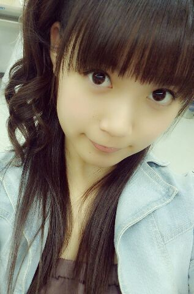
前回はたくさんのコメント
本当にありがとうございました！
初コメさんがたくさんいらっしゃって
びっくりしましたー
ほんとに嬉しいよーこれからよろしくね(〃ω〃)
そしていつものひめきゅんさんには
テレビでなんかやってる姿を観てもらえて
こちらも嬉しいよーいつもありがとー！
さゆにゃーんブログ読んだよーありがとー///
そうなんですーいよいよねー
全国ツアー初日の札幌まであと２日ですかー
やばいですねーなにせ初北海道ですからねー
あ初ってのは
乃木坂のライブって意味もあり
ひめたん自身行ったことないのよー
北海道は涼しいって聞いておるよー
北海道民のみなさんおじゃましまーす♪
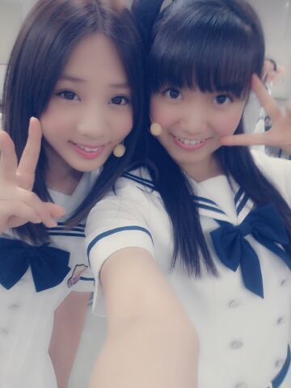
ねーこの写め
貼ったことあったっけー(´・ω・｀)？
お知らせ☆
ひめたんデザインのTシャツが
Official Web Shop とかで販売してるよー！
白いからこれ着てカレーうどんとか
食べちゃだめだよー
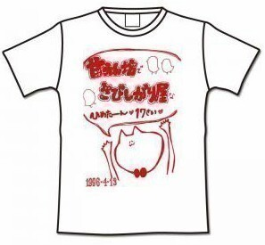
でね、そう目覚まし時計。
そんなつもりで話したんじゃなかったけど
ホラー話かそれは！って言われて
え？そうなのこれやばいやつなの(´・ω・｀)？
電池１本抜いたのにってゆったけど
あくまで電池は元々４本入れるやつで
そのうちの１本抜いたからさんぼん...
もー面倒だからいーやー
とにかく万能なんだか迷惑なんだか
よーわからんねって話。
頑張って止まったら報告するからね！
家で目覚まし時計拾うって
どーゆーことよって
愛のあるツッコミをありがとー∩^ω^∩
えっと、なんでそーなったのか、
想像してみよう！私は質問に答える！

 ひめたんビームとさゆりんごパンチは
ひめたんビームとさゆりんごパンチは
どっちが強いの？笑うーん...
その質問はー
世界の規律を崩す質問なので
答えれませーん(o・・o)
by さゆりんご(o・・o)
ひめたんはカラオケとかよく行くの？行きたいーとはいつも言ってるよー
今日もろってぃーと
またカラオケ行こーって話したよー(*^ω^*)♪
ずっと気になってたんだけど
ガールズルールのプールのシーン、
転びそうにならなかった？？出てません！一切出ません！
...なんてね。元ネタはご存知ですか？(笑)
ひめたんが手書きで書いている
ねこ？の名前ってなんていうの？とりあ にゃんこ様と呼んでいますが
素敵な名前があったらどうぞこちらまで。
今行きたいっ!!!!!!って思うところはどこぉ??あしゅはボラボラ島に行きたいんだってー
ひめたーんはどこいこっかなー
おかしのおうちーとか行ってみたいけど
その前にマッサージに...
か、川後P！！
これからでも推していいかなーー
推し増しで、ひめきゅんになってもいいかなうはああ嬉しいよー(´;ω;`)感涙
頭があがらんぜです。
これからもめっちゃ頑張ります！
「銀色の週末」って曲
ひめたん知ってますか??知らなかった！ぐぐってきます( ω )
個握で歌ってってお願いしたらダメかな？だめじゃないよー歌うの好きだよー♪
リクエストお待ちしておりまっす
距離めちゃ近いのは覚悟しとってね///
歌うときのコツはありますか？自信をもって堂々と、が一番かしらねー
自信ないのでアドバイスできる立場でもないけど
ひめたんは心から楽しんで歌ってるよー☆
ひめたーん。ひめたーん。
・・・こっちふりかえってくれるかな？←はーい( ^ω^ )/
ひめたんってほんと
絵に描ける顔してるよねーて
らりんに言われました。
そ、それは...
描いてらりん！
てかみなさん描いてみて！
そんでひめたんにみせてー！
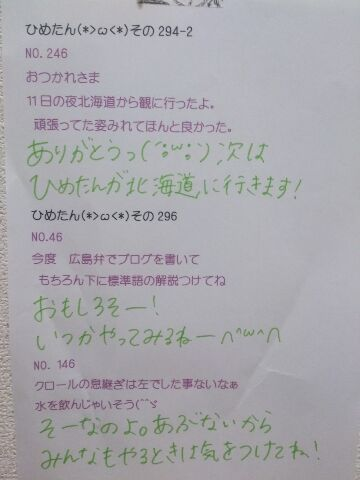
(＊´・ω・＊)
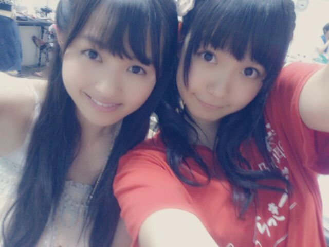
安定のなかいさん\( ^ω^ )/
ひめたんがどーしてもアウカメで撮りたいって
わがままを言ったので
ひめたんが鏡を両手で持って
まりかがシャッター押してくれたので
ふたりとも手が元気な感じになっておりまーす
状況伝わるかなー
さて前回のNOGIBINGOのカラオケどぼんで
なんと歌わせていただいたのでしたー
報告って形になったのは理由があるんですー
あんねあんねあんねー緊張してね
いつもピッチおかしいねって言われるのに
あの日はさらに声ガクガクだったの。
だから告知しませんでしたー( ^ω^ )
黙っててごめんね( ^ω^ )( ^ω^ )
てことで
岡本真夜さんのTOMORROWを
歌わせていただきましたー
コメントなんか読んでると
いろんな方に観ていただいて嬉しす！
いやー思ったより高いんだあの台！
で、なんでこの曲にしたの？って
コメントがたくさんあったのでお答えすると
この歌すきなの(*^ω^*)
何だろう。この詞がとっても元気に
なれる感じがするじゃない？
涙の数だけ強くなれるよって。
この曲ね、ねーさんがちっちゃい頃に
めーっちゃおうちで練習してたらしいの
それでいっぱい聴いてたんだろうし
歌ってるねーさん楽しそー！って
ちっちゃい頃のひめたんは思ったんかなー
そんな思い出もある大事な曲です
いざ歌ってみると難しかったけどね(〃ω〃)
NOGIBINGOの制服写めばんっ
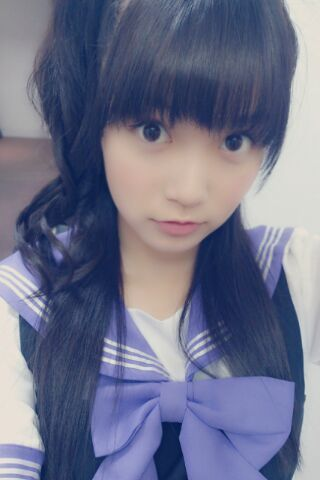
さてさてー
前にブログであれだけ
ストレート好評だったーとか言っといて
握手会でストレートしなくて
ほんとにごめんねー(´・ω・｀)
あのブログはフリだったろ？とか
ストレート期待してたのにー！て方が
いっぱいいらっしゃって。
うん近いうちにするから待っててー！
あっ「とける」の漢字
教えてくれてありがとー∩^ω^∩
ひめたんが書いたのを受けて
わざわざ調べてくださったみなさん
お疲れ様ですーごめんねー助かりましたー♪
あとね最近悩んでることがあって
おうちで目覚まし時計拾ったから
am4:40とかに設定したのちょっと前に
そしたらね毎日なり続けるの(´・ω・｀)
止まんないのよ止め方わからんのよ
電池１本抜いても目覚まし時計って動くのよ
助けてー！

 BLTさんTシャツを
BLTさんTシャツを
メンバーと交換しましたか？してなーい(´・ω・｀)
中伊さんたちのブログて
いつも上下で隣同士ですけど、わざと
同じくらいの時間にupしてるんですかー？言われてみればそうかもねー
打ち合わせまではさすがにしてないよー
ガールズルールの衣装って
自分が着たいチームのを着てるんですか？希望はとっていただいたよー
あとは全体のバランスとかも
考えられてるんじゃないかな？
Zeppリハ浸けの毎日。
充実してるよー
今日もがんばるー！
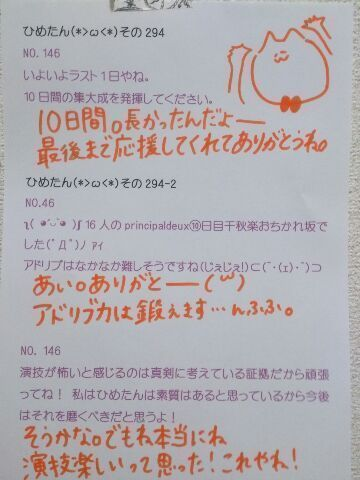
(＊´・ω・＊)